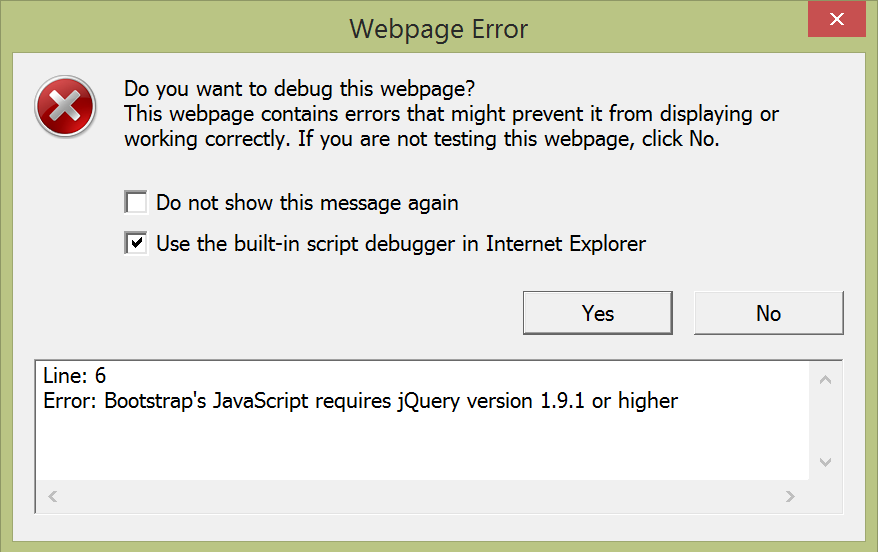

The Bootstrap install included a copy of JQuery 1.9.0. When opening a page with Bootstrap you get an error because it is looking for 1.9.1 or higher. This error can be eliminated by installing a newer version. Chrome does not seem to care.
Even more mysterious is that when running inside Visual Studio you get this error not mater what version of jQuery you attempt to run. Again, Chrome does not seem to care.
I theoryize this error comes from the Story utility. It uses jQuery 1.7. I think the rendering inside Visual Studio still uses the older version inside the iframe even though a new one is called.
I ran the test by commenting out 2 of the first 3 lines of the following:
I created the following 3 pages of pages/experiments: